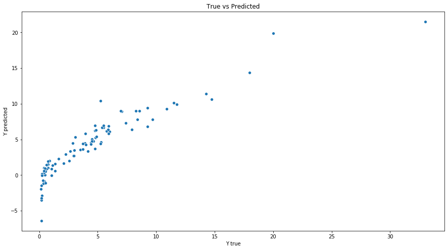
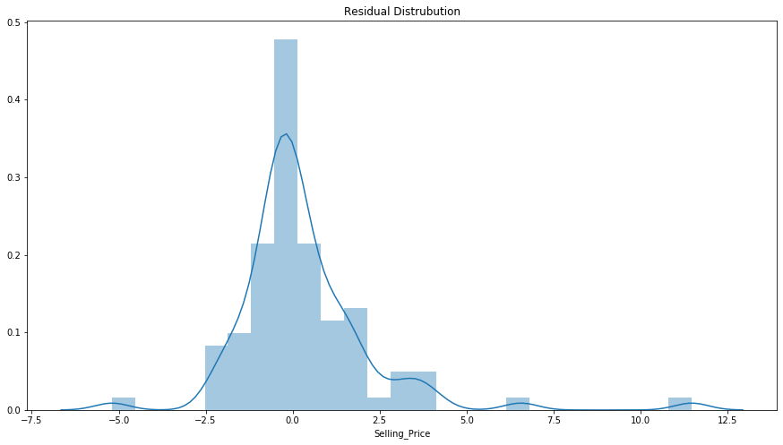

297 0
298 0
299 0
300 0
Name: Seller_Type, Length: 301, dtype: int32
In [38]: data.Transmission
Out[38]:
0 1
1 1
2 1
3 1
4 1
..
296 1
297 1
298 1
299 1
300 1
Name: Transmission, Length: 301, dtype: int32
In [39]: data.iloc[ 60:100,:].values
Out[39]:
array([['corolla altis', 2013, 6.95, 18.61, 40001, 'Petrol', 0, 1, 0, 6],
['etios cross', 2015, 4.5, 7.7, 40588, 'Petrol', 0, 1, 0, 4],
['fortuner', 2014, 18.75, 35.96, 78000, 'Diesel', 0, 0, 0, 5],
['fortuner', 2015, 23.5, 35.96, 47000, 'Diesel', 0, 0, 0, 4],
['fortuner', 2017, 33.0, 36.23, 6000, 'Diesel', 0, 0, 0, 2],
['etios liva', 2014, 4.75, 6.95, 45000, 'Diesel', 0, 1, 0, 5],
['innova', 2017, 19.75, 23.15, 11000, 'Petrol', 0, 0, 0, 2],
['fortuner', 2010, 9.25, 20.45, 59000, 'Diesel', 0, 1, 0, 9],
['corolla altis', 2011, 4.35, 13.74, 88000, 'Petrol', 0, 1, 0, 8],
['corolla altis', 2016, 14.25, 20.91, 12000, 'Petrol', 0, 1, 0, 3],
['etios liva', 2014, 3.95, 6.76, 71000, 'Diesel', 0, 1, 0, 5],
['corolla altis', 2011, 4.5, 12.48, 45000, 'Diesel', 0, 1, 0, 8],
['corolla altis', 2013, 7.45, 18.61, 56001, 'Petrol', 0, 1, 0, 6],
['etios liva', 2011, 2.65, 5.71, 43000, 'Petrol', 0, 1, 0, 8],
['etios cross', 2014, 4.9, 8.93, 83000, 'Diesel', 0, 1, 0, 5],
['etios g', 2015, 3.95, 6.8, 36000, 'Petrol', 0, 1, 0, 4],
['corolla altis', 2013, 5.5, 14.68, 72000, 'Petrol', 0, 1, 0, 6],
['corolla', 2004, 1.5, 12.35, 135154, 'Petrol', 0, 0, 0, 15],
['corolla altis', 2010, 5.25, 22.83, 80000, 'Petrol', 0, 0, 0, 9],
['fortuner', 2012, 14.5, 30.61, 89000, 'Diesel', 0, 0, 0, 7],
['corolla altis', 2016, 14.73, 14.89, 23000, 'Diesel', 0, 1, 0, 3],
['etios gd', 2015, 4.75, 7.85, 40000, 'Diesel', 0, 1, 0, 4],
['innova', 2017, 23.0, 25.39, 15000, 'Diesel', 0, 0, 0, 2],
['innova', 2015, 12.5, 13.46, 38000, 'Diesel', 0, 1, 0, 4],
['innova', 2005, 3.49, 13.46, 197176, 'Diesel', 0, 1, 0, 14],
['camry', 2006, 2.5, 23.73, 142000, 'Petrol', 1, 0, 3, 13],
['land cruiser', 2010, 35.0, 92.6, 78000, 'Diesel', 0, 1, 0, 9],
['corolla altis', 2012, 5.9, 13.74, 56000, 'Petrol', 0, 1, 0, 7],
['etios liva', 2013, 3.45, 6.05, 47000, 'Petrol', 0, 1, 0, 6],
['etios g', 2014, 4.75, 6.76, 40000, 'Petrol', 0, 1, 0, 5],
['corolla altis', 2009, 3.8, 18.61, 62000, 'Petrol', 0, 1, 0, 10],
['innova', 2014, 11.25, 16.09, 58242, 'Diesel', 0, 1, 0, 5],
['innova', 2005, 3.51, 13.7, 75000, 'Petrol', 0, 1, 0, 14],
['fortuner', 2015, 23.0, 30.61, 40000, 'Diesel', 0, 0, 0, 4],
['corolla altis', 2008, 4.0, 22.78, 89000, 'Petrol', 0, 0, 0, 11],
['corolla altis', 2012, 5.85, 18.61, 72000, 'Petrol', 0, 1, 0, 7],
['innova', 2016, 20.75, 25.39, 29000, 'Diesel', 0, 0, 0, 3],
['corolla altis', 2017, 17.0, 18.64, 8700, 'Petrol', 0, 1, 0, 2],
['corolla altis', 2013, 7.05, 18.61, 45000, 'Petrol', 0, 1, 0, 6],
['fortuner', 2010, 9.65, 20.45, 50024, 'Diesel', 0, 1, 0, 9]],
dtype=object)
In [40]: data.iloc[ 60:100,7:8].values
Out[40]:
array([[1],
[1],
[0],
[0],
[0],
[1],
[0],
[1],
[1],
[1],
[1],
[1],
[1],
[1],
[1],
[1],
[1],
[0],
[0],
[0],
[1],
[1],
[0],
[1],
[1],
[0],
[1],
[1],
[1],
[1],
[1],
[1],
[1],
[0],
[0],
[1],
[0],
[1],
[1],
[1]])
In [41]: data = pd.concat([data,df],axis = 1)
In [42]: data
Out[42]:
Car_Name Year Selling_Price ... Y_S_L FT_Diesel FT_Petrol
0 ritz 2014 3.35 ... 5 0 1
1 sx4 2013 4.75 ... 6 1 0
2 ciaz 2017 7.25 ... 2 0 1
3 wagon r 2011 2.85 ... 8 0 1
4 swift 2014 4.60 ... 5 1 0
.. ... ... ... ... ... ... ...
296 city 2016 9.50 ... 3 1 0
297 brio 2015 4.00 ... 4 0 1
298 city 2009 3.35 ... 10 0 1
299 city 2017 11.50 ... 2 1 0
300 brio 2016 5.30 ... 3 0 1
[301 rows x 12 columns]
In [43]: data.drop(['Fuel_Type'],axis=1,inplace =True)
In [44]: data
Out[44]:
Car_Name Year Selling_Price ... Y_S_L FT_Diesel FT_Petrol
0 ritz 2014 3.35 ... 5 0 1
1 sx4 2013 4.75 ... 6 1 0
2 ciaz 2017 7.25 ... 2 0 1
3 wagon r 2011 2.85 ... 8 0 1
4 swift 2014 4.60 ... 5 1 0
.. ... ... ... ... ... ... ...
296 city 2016 9.50 ... 3 1 0
297 brio 2015 4.00 ... 4 0 1
298 city 2009 3.35 ... 10 0 1
299 city 2017 11.50 ... 2 1 0
300 brio 2016 5.30 ... 3 0 1
[301 rows x 11 columns]
In [45]: data.head()
Out[45]:
Car_Name Year Selling_Price ... Y_S_L FT_Diesel FT_Petrol
0 ritz 2014 3.35 ... 5 0 1
1 sx4 2013 4.75 ... 6 1 0
2 ciaz 2017 7.25 ... 2 0 1
3 wagon r 2011 2.85 ... 8 0 1
4 swift 2014 4.60 ... 5 1 0
[5 rows x 11 columns]
In [46]: def get_model(X,y):
...: X_train,X_test,y_train,y_test = train_test_split(X,y,test_size = 0.3,random_state=1)
...: regressor = LinearRegression()
...: regressor.fit(X_train,y_train)
...: y_pred = regressor.predict(X_train)
...: coefficients = pd.DataFrame(regressor.coef_,X.columns)
...: coefficients.columns= ['Coefficients']
...: print(f' Coefficients: \n {coefficients} \n')
In [47]: X = data.drop(['Car_Name','Selling_Price'],axis = 1)
...: y = data ['Selling_Price ']
Traceback (most recent call last):
File "<ipython-input-47-5731852b3599>", line 2, in <module>
y = data ['Selling_Price ']
File "C:\Users\user\Anaconda3\lib\site-packages\pandas\core\frame.py", line 2980, in __getitem__
indexer = self.columns.get_loc(key)
File "C:\Users\user\Anaconda3\lib\site-packages\pandas\core\indexes\base.py", line 2899, in get_loc
return self._engine.get_loc(self._maybe_cast_indexer(key))
File "pandas\_libs\index.pyx", line 107, in pandas._libs.index.IndexEngine.get_loc
File "pandas\_libs\index.pyx", line 131, in pandas._libs.index.IndexEngine.get_loc
File "pandas\_libs\hashtable_class_helper.pxi", line 1607, in pandas._libs.hashtable.PyObjectHashTable.get_item
File "pandas\_libs\hashtable_class_helper.pxi", line 1614, in pandas._libs.hashtable.PyObjectHashTable.get_item
KeyError: 'Selling_Price '
In [48]:
In [48]: X = data.drop(['Car_Name','Selling_Price'],axis = 1)
...: y = data['Selling_Price ']
Traceback (most recent call last):
File "<ipython-input-48-95f06dea9bb0>", line 2, in <module>
y = data['Selling_Price ']
File "C:\Users\user\Anaconda3\lib\site-packages\pandas\core\frame.py", line 2980, in __getitem__
indexer = self.columns.get_loc(key)
File "C:\Users\user\Anaconda3\lib\site-packages\pandas\core\indexes\base.py", line 2899, in get_loc
return self._engine.get_loc(self._maybe_cast_indexer(key))
File "pandas\_libs\index.pyx", line 107, in pandas._libs.index.IndexEngine.get_loc
File "pandas\_libs\index.pyx", line 131, in pandas._libs.index.IndexEngine.get_loc
File "pandas\_libs\hashtable_class_helper.pxi", line 1607, in pandas._libs.hashtable.PyObjectHashTable.get_item
File "pandas\_libs\hashtable_class_helper.pxi", line 1614, in pandas._libs.hashtable.PyObjectHashTable.get_item
KeyError: 'Selling_Price '
In [49]:
In [49]: X = data.drop(['Car_Name','Selling_Price'],axis = 1)
...: y = data['Selling_Price']
In [50]: X
Out[50]:
Year Present_Price Kms_Driven ... Y_S_L FT_Diesel FT_Petrol
0 2014 5.59 27000 ... 5 0 1
1 2013 9.54 43000 ... 6 1 0
2 2017 9.85 6900 ... 2 0 1
3 2011 4.15 5200 ... 8 0 1
4 2014 6.87 42450 ... 5 1 0
.. ... ... ... ... ... ... ...
296 2016 11.60 33988 ... 3 1 0
297 2015 5.90 60000 ... 4 0 1
298 2009 11.00 87934 ... 10 0 1
299 2017 12.50 9000 ... 2 1 0
300 2016 5.90 5464 ... 3 0 1
[301 rows x 9 columns]
In [51]: y
Out[51]:
0 3.35
1 4.75
2 7.25
3 2.85
4 4.60
...
296 9.50
297 4.00
298 3.35
299 11.50
300 5.30
Name: Selling_Price, Length: 301, dtype: float64
In [52]: get_model(X,y)
Coefficients:
Coefficients
Year 0.210257
Present_Price 0.441286
Kms_Driven -0.000004
Seller_Type -1.102102
Transmission -1.774630
Owner 0.512180
Y_S_L -0.210257
FT_Diesel 2.180670
FT_Petrol 0.429073
In [53]: def get_model(X,y):
...: X_train,X_test,y_train,y_test = train_test_split(X,y,test_size = 0.3,random_state=1)
...: regressor = LinearRegression()
...: regressor.fit(X_train,y_train)
...: y_pred = regressor.predict(X_train)
...: coefficients = pd.DataFrame(regressor.coef_,X.columns)
...: coefficients.columns= ['Coefficients']
...: print(f' Coefficients: \n {coefficients} \n')
...: mse = mean_squared_error(y_test,y_pred)
...: rmse = np.sqrt(mse)
...: print(f'Mean Squared Error of Test Set : {mse}')
...: print(f'Root Mean Square Error of Test Set : {rmse}')
In [54]: get_model(X,y)
Coefficients:
Coefficients
Year 0.210257
Present_Price 0.441286
Kms_Driven -0.000004
Seller_Type -1.102102
Transmission -1.774630
Owner 0.512180
Y_S_L -0.210257
FT_Diesel 2.180670
FT_Petrol 0.429073
Traceback (most recent call last):
File "<ipython-input-54-4fd8462af18d>", line 1, in <module>
get_model(X,y)
File "<ipython-input-53-9ae002fb12c3>", line 9, in get_model
mse = mean_squared_error(y_test,y_pred)
File "C:\Users\user\Anaconda3\lib\site-packages\sklearn\metrics\regression.py", line 241, in mean_squared_error
y_true, y_pred, multioutput)
File "C:\Users\user\Anaconda3\lib\site-packages\sklearn\metrics\regression.py", line 77, in _check_reg_targets
check_consistent_length(y_true, y_pred)
File "C:\Users\user\Anaconda3\lib\site-packages\sklearn\utils\validation.py", line 205, in check_consistent_length
" samples: %r" % [int(l) for l in lengths])
ValueError: Found input variables with inconsistent numbers of samples: [91, 210]
In [55]:
In [55]: def get_model(X,y):
...: X_train,X_test,y_train,y_test = train_test_split(X,y,test_size = 0.3,random_state=1)
...: regressor = LinearRegression()
...: regressor.fit(X_train,y_train)
...: y_pred = regressor.predict(X_train)
...: coefficients = pd.DataFrame(regressor.coef_,X.columns)
...: coefficients.columns= ['Coefficients']
...: print(f' Coefficients: \n {coefficients} \n')
...: mse = mean_squared_error(y_test,y_pred)
...: rmse = np.sqrt(mse)
...: print(f'Mean Squared Error of Test Set : {mse}')
...: print(f'Root Mean Square Error of Test Set : {rmse}')
In [56]: X = data.drop(['Car_Name','Selling_Price'],axis = 1)
...: y = data['Selling_Price']
In [57]: get_model(X,y)
Coefficients:
Coefficients
Year 0.210257
Present_Price 0.441286
Kms_Driven -0.000004
Seller_Type -1.102102
Transmission -1.774630
Owner 0.512180
Y_S_L -0.210257
FT_Diesel 2.180670
FT_Petrol 0.429073
Traceback (most recent call last):
File "<ipython-input-57-4fd8462af18d>", line 1, in <module>
get_model(X,y)
File "<ipython-input-55-9ae002fb12c3>", line 9, in get_model
mse = mean_squared_error(y_test,y_pred)
File "C:\Users\user\Anaconda3\lib\site-packages\sklearn\metrics\regression.py", line 241, in mean_squared_error
y_true, y_pred, multioutput)
File "C:\Users\user\Anaconda3\lib\site-packages\sklearn\metrics\regression.py", line 77, in _check_reg_targets
check_consistent_length(y_true, y_pred)
File "C:\Users\user\Anaconda3\lib\site-packages\sklearn\utils\validation.py", line 205, in check_consistent_length
" samples: %r" % [int(l) for l in lengths])
ValueError: Found input variables with inconsistent numbers of samples: [91, 210]
In [58]:
In [58]: def get_model(X,y):
...: X_train,X_test,y_train,y_test = train_test_split(X,y,test_size=0.3,random_state=10)
...: lr = LinearRegression()
...:
...: lr.fit(X_train,y_train)
...: y_pred = lr.predict(X_test)
...:
...: coeffecients = pd.DataFrame(lr.coef_,X.columns)
...: coeffecients.columns = ['Coeffecient']
...: print(f' Coefficients : \n {coeffecients} \n')
...:
...: mse = mean_squared_error(y_test,y_pred)
...: rmse = np.sqrt(mse)
...: print(f'Mean Squared Error of Test Set : {mse}')
...: print(f'Root Mean Square Error of Test Set : {rmse}')
...:
...: yt_pred = lr.predict(X_train)
...: tmse = mean_squared_error(y_test,y_pred)
...: trmse = np.sqrt(mse)
...: print(f'Mean Squared Error of Train Set : {tmse}')
...: print(f'Root Mean Square Error of Train Set : {trmse}')
...:
...:
...: fig,ax1 = plt.subplots(figsize=(15,8))
...: fig = sns.scatterplot(y_test,y_pred,ax=ax1)
...: plt.xlabel('Y true')
...: plt.ylabel('Y predicted')
...: plt.title('True vs Predicted')
...: plt.show(fig)
...:
...: fig,ax1 = plt.subplots(figsize=(15,8))
...: fig = sns.distplot((y_test-y_pred),ax=ax1);
...: plt.title('Residual Distrubution')
...: plt.show(fig)
In [59]: get_model(X,y)
Coefficients :
Coeffecient
Year 0.182201
Present_Price 0.427691
Kms_Driven -0.000012
Seller_Type -1.407783
Transmission -1.212847
Owner -1.176891
Y_S_L -0.182201
FT_Diesel 2.651073
FT_Petrol 0.759967
Mean Squared Error of Test Set : 3.965076206742491
Root Mean Square Error of Test Set : 1.9912499106698012
Mean Squared Error of Train Set : 3.965076206742491
Root Mean Square Error of Train Set : 1.9912499106698012


In [60]: def get_model(X,y):
...: X_train,X_test,y_train,y_test = train_test_split(X,y,test_size=0.3,random_state=10)
...: lr = LinearRegression()
...:
...: lr.fit(X_train,y_train)
...: y_pred = lr.predict(X_test)
...:
...: coeffecients = pd.DataFrame(lr.coef_,X.columns)
...: coeffecients.columns = ['Coeffecient']
...: print(f' Coefficients : \n {coeffecients} \n')
...:
...: mse = mean_squared_error(y_test,y_pred)
...: rmse = np.sqrt(mse)
...: print(f'Mean Squared Error of Test Set : {mse}')
...: print(f'Root Mean Square Error of Test Set : {rmse}')
...:
...: yt_pred = lr.predict(X_train)
...: tmse = mean_squared_error(y_test,y_pred)
...: trmse = np.sqrt(mse)
...: print(f'Mean Squared Error of Train Set : {tmse}')
...: print(f'Root Mean Square Error of Train Set : {trmse}')
In [61]: get_model(X,y)
Coefficients :
Coeffecient
Year 0.182201
Present_Price 0.427691
Kms_Driven -0.000012
Seller_Type -1.407783
Transmission -1.212847
Owner -1.176891
Y_S_L -0.182201
FT_Diesel 2.651073
FT_Petrol 0.759967
Mean Squared Error of Test Set : 3.965076206742491
Root Mean Square Error of Test Set : 1.9912499106698012
Mean Squared Error of Train Set : 3.965076206742491
Root Mean Square Error of Train Set : 1.9912499106698012
In [62]: X = data.drop(['Car_Name','Selling_Price','Kms_Driven','Seller_Type','Transmission',
...: 'Owner', 'Y_S_L','FT_Petrol'],axis = 1)
...: y = data['Selling_Price']
In [63]: X
Out[63]:
Year Present_Price FT_Diesel
0 2014 5.59 0
1 2013 9.54 1
2 2017 9.85 0
3 2011 4.15 0
4 2014 6.87 1
.. ... ... ...
296 2016 11.60 1
297 2015 5.90 0
298 2009 11.00 0
299 2017 12.50 1
300 2016 5.90 0
[301 rows x 3 columns]
In [64]: y
Out[64]:
0 3.35
1 4.75
2 7.25
3 2.85
4 4.60
...
296 9.50
297 4.00
298 3.35
299 11.50
300 5.30
Name: Selling_Price, Length: 301, dtype: float64
In [65]: